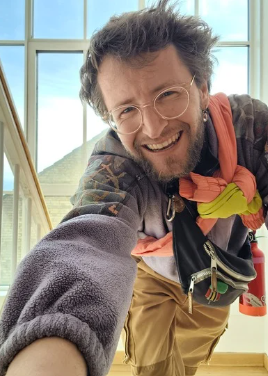

In-person dating events · Copenhagen
Tired of swiping? So were we. Softer Dating is is the alternative to online dating. A space for real connection, for slowing down and meeting others eye to eye.
The circle behind these words breathes at the pace of a calm breath. Join it for one — that's the speed we date at.
Why we exist
"Is there really no alternative to swiping? I just want to meet cute people!"
That question is where Softer Dating began. We see a deep longing in people to connect with other humans, face to face, not through a screen. It takes courage to "out" yourself as someone who longs for connection.
So we create a space that feels safe enough to take that step. We facilitate the first interactions to carry you over the initial awkwardness, then it opens into relaxed, playful encounters. Presence, curiosity and kindness matter here more than polished small talk.
Who's behind this

I'm a facilitator and coach based in Copenhagen, and the one guiding you through these evenings. My work lives at the intersection of connection, consent and embodiment. By now, I've spent years holding spaces where people get to drop the performance and actually meet each other.
Softer Dating grew out of a simple frustration: I kept hearing (and feeling) that swiping leaves us lonelier than before. So I built the thing I wished existed, a warm room with gentle guidance where real people can meet authentically.
Every exercise we do is grounded in frameworks I work with daily: the Wheel of Consent, nonviolent communication, and somatic practice. Mostly though, it's grounded in the belief that everyone deserves to be met with curiosity.
— Philipp - Pyt
Upcoming
Evenings are organized by age group, with 25–40 people in the room.
Nervous? We got you
We organize by age group, so you won't feel like an outlier. You'll look around and think, "these are my people." Mainly singles and everyone who is there is there to date.
Such a classic question! We don't guarantee a perfect 1:1. For one, because gender isn't binary in our eyes, and because our events are about connection first. Even an exercise with someone you won't end up dating can be interesting and valuable in itself.
Yes, some exercises involve eye contact and some involve touch. And you are always in control: close your eyes, look away, or skip an exercise entirely. Consent is at the heart of everything, everyone is encouraged to respect each other's boundaries.
You can always opt out, easily. We have an observation space where you can simply watch and re-center, which can be a lovely and quite cute experience in itself.
Totally fine. This is an emotionally inclusive space, whatever comes up is welcome. By the end of the night, people are remarkably comfortable around each other, and brave.
Something you can move in freely, we might sitting on (soft) floors. At the same time: this is a dating event, so wear something that makes you feel comfortable, confident and attractive. Go easy on the perfume; pheromone matching is a thing! ;)
At the end of the evening you'll have a facilitated chance to express interest to the people you felt a connection with, and exchange numbers or socials. By then, people are comfortable and brave.
Most dating events are about efficiency: meet as many people as possible in limited time. We slow down. Way down. Less interviewing, more sensing, playing, moving, you'll notice someone's presence, the small details of how they move, the energy between you. That's where real connection happens.
More questions? Write us at softerdating@gmail.com
From the blog
Essays and field notes from our events: on dating app fatigue, embodiment, and meeting people in the flesh.